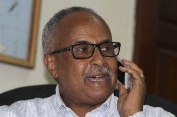

khatumo.net archive
Somali central bank governor denies U.N. charges over funds
Published without a byline
July 21, 2013

Somali bank governor, Abdusalam Omer,
NAIROBI (Reuters) – The governor of the Central Bank of Somalia denied on Tuesday allegations in a U.N. report linking him to irregularities regarding millions of dollars withdrawn from the bank, saying the charges were malicious and baseless. Somalia, under a Western-backed government that took office last year, is trying to rebuild after 20 years of war in which the nation was carved up into fiefdoms by warlords and then ruled by Islamist militants. Its public institutions remain feeble.
The U.N. Group of Experts to the Security Council’s Somalia and Eritrea sanctions committee said that of $16.9 million (11.1 million pounds) of international aid transferred by fiduciary agent PricewaterhouseCoopers (PWC) to the central bank, about $12 million could not be traced.
The confidential report seen by Reuters said the current bank governor, Abdusalam Omer, was “key to these irregularities”. Omer was appointed to the post in January and the allegations include a period before that, when he acted as adviser to the Finance Ministry.
“This is an attempt to discredit me as the governor of the central bank and to discredit the embryonic financial institutions of the country,” Omer told Reuters by telephone from Mogadishu. “This is malicious and this is wrong.”
The U.N. report blamed a system of patronage, in which a person can ask Somali leaders for a private payment “that cannot be resisted for personal or other reasons”, for undermining the establishment of an efficient state.
It said the central bank became a “slush fund” for the patronage system, with 80 percent of withdrawals for private purposes, not running the government.
Omer, a 59-year-old dual Somali-U.S. national, said he had proof that, of the $16.9 million, almost all of it was deposited in an account at the central bank run by the Finance Ministry. The remaining $940,000 went into an account set up by a former prime minister for “regional relations”, he said.
“I made sure the money reached the Central Bank of Somalia, with the help of PWC, and the remittance company. Everybody signed for it,” he said, referring to a period when he was advising the Finance Ministry from Nairobi after PWC set up an account in the Kenyan capital to send the funds to Somalia.
He said the $16.9 million was aid from a range of countries.
But Omer said he was not responsible for what happened to funds after withdrawal. “I did not sign for the account in any way, and I was never party to how the money is spent,” he said.
Those comments were echoed in a letter from Omer to the U.N. experts, dated July 2, and obtained by Reuters.
“It is not in the mandate of the bank nor any of its statutory obligations to determine where expenditure is directed to or which ministry or public office should receive money from the government funds,” he wrote.
“This is a budgetary issue of which the prerogative lays with the Ministry of Finance,” he said, adding in the letter marked “formal complaint” that the process of investigation behind the report was “deeply flawed”.
The report said Omer took all bank decisions as there was no board. Omer said he acted within a law giving the governor responsibility for decisions about mainly administrative matters, but was awaiting the appointment of a board for major decisions, such as printing a currency.